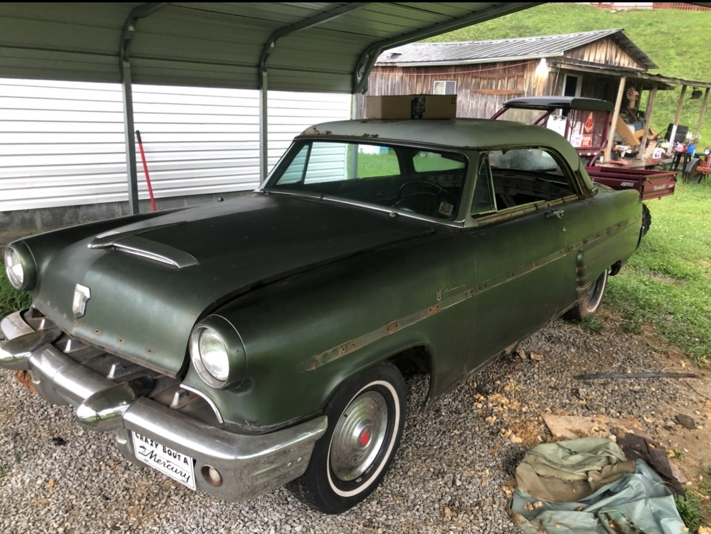
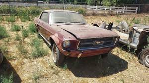
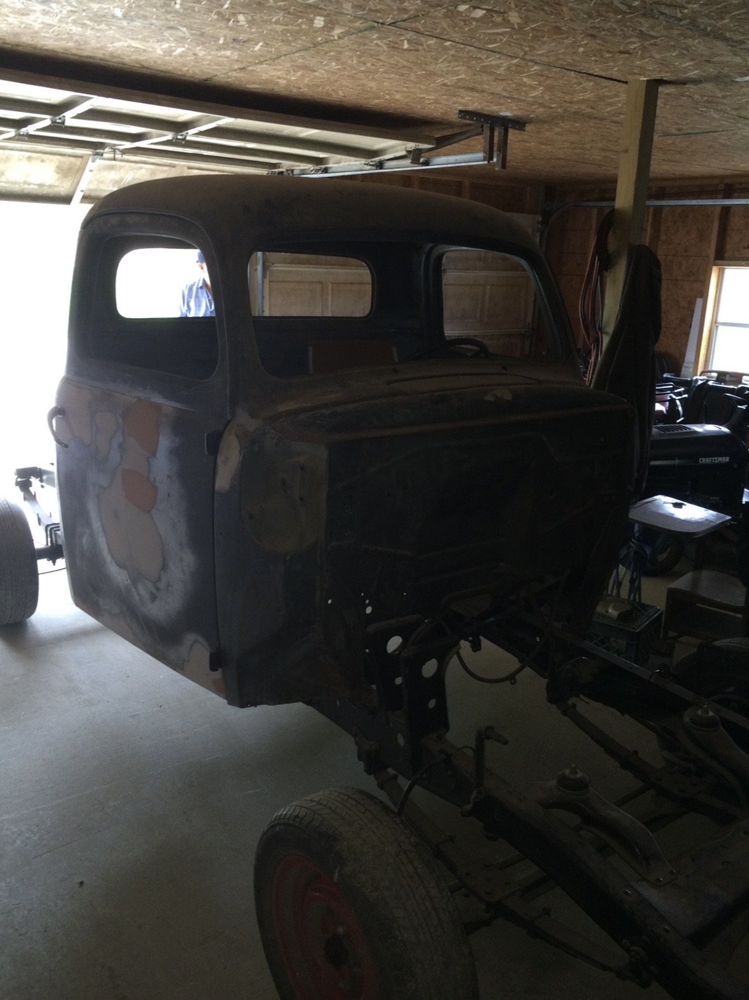
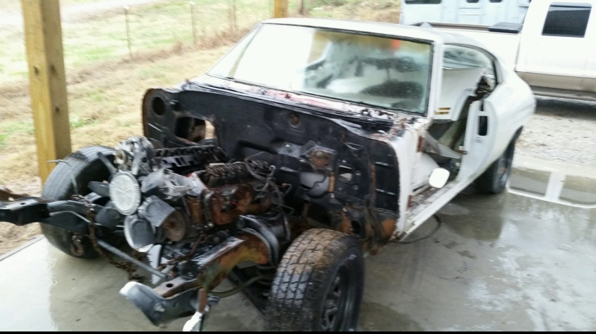
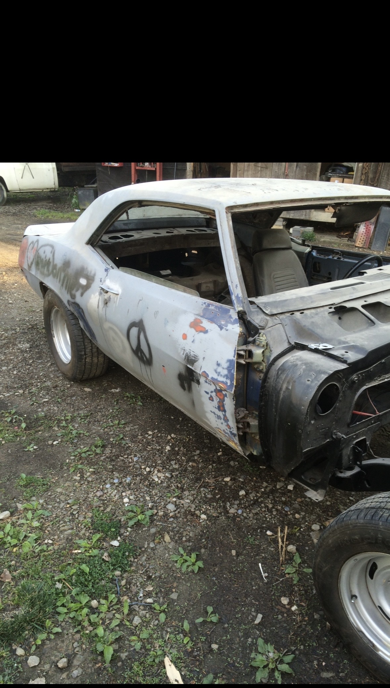

Before Cars Gallery
These vehicles show their condition before their restoration.
What is Vehicle Restoration?
Vehicle restoration is the process of repairing, refurbishing, and refinishing a classic or vintage car to return it to its original condition or better. This can include bodywork, engine rebuilding, interior repairs, repainting, and replacing worn or damaged parts.





